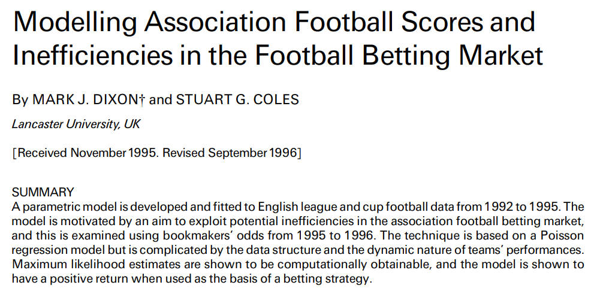
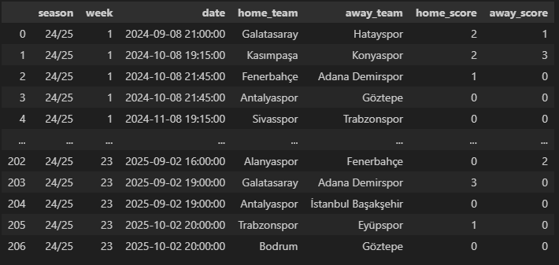
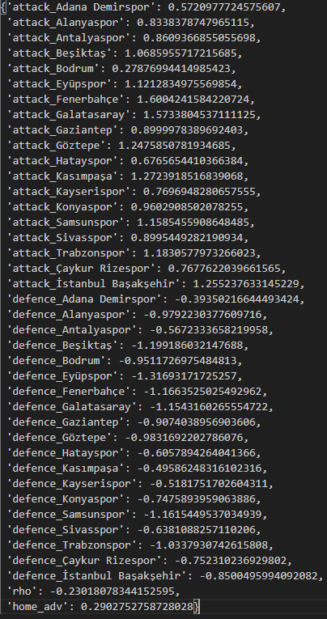
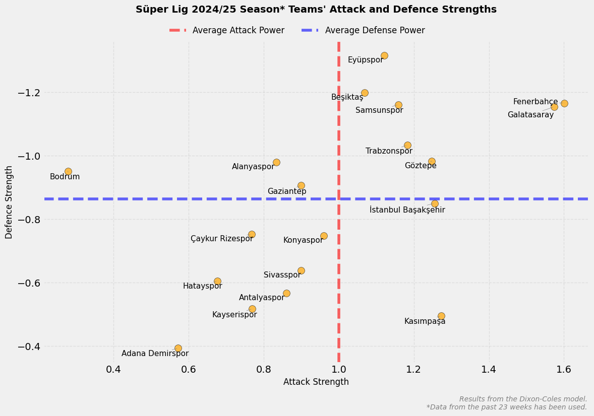
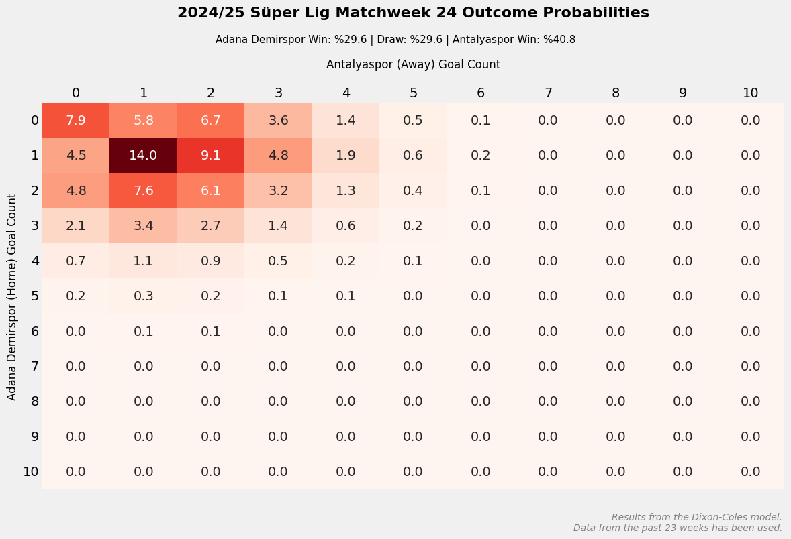

Dixon-Coles Model
Developed by Mark J. Dixon and Stuart G. Coles in 1997, the Dixon-Coles model improves the modeling of dependencies in low-scoring matches by incorporating a correction factor into the traditional Poisson regression. This model has become significant in the field, particularly for improving the accuracy of predicting rare scores.
Dixon and Coles’ paper, Modelling Association Football Scores and Inefficiencies in the Football Betting Market, serves as the foundation of this methodology. The model estimates teams’ attacking and defensive strengths to calculate the possible score distributions for a given match.

In this article, we will explore the theoretical foundations of the Dixon-Coles model in detail. We will delve into its mathematical structure, examine the parameter estimation process, and walk through a step-by-step implementation in Python. During the implementation, we will focus on preparing the dataset, optimizing the model, and interpreting the results.
Theoretical Foundations of the Dixon-Coles Model
The Dixon-Coles model is a statistical approach that utilizes the Poisson distribution to predict football match outcomes. It quantifies each team’s attacking and defensive strengths using mathematical parameters and applies them to estimate potential score distributions for a given match. Unlike the traditional Poisson model, the Dixon-Coles model includes an additional correction factor to better capture dependencies in low-scoring matches. This adjustment improves the model’s predictive accuracy, leading to more realistic outcomes.
Poisson Distribution and Football Matches
The Poisson distribution is commonly used to model the number of events occurring within a fixed time interval and is frequently applied to predict the number of goals a team scores in football matches. However, the traditional Poisson model assumes that a team’s goal-scoring tendencies are independent of its opponent’s performance. Dixon and Coles showed that this assumption fails in low-scoring matches and introduced a correction factor (\(\tau\)) to adjust the model.
The probability of a team scoring a given number of goals is expressed as:
\(P(X=k)=\frac{e^{-\lambda}\lambda^k}{k!}\)
Where:
- \(λ\): The team’s expected number of goals
- \(k\): The number of goals scored by the team
Parameters of the Dixon-Coles Model
The Dixon-Coles model is a Poisson-based regression model designed to estimate each team’s attacking strength (\(\alpha\)) and defensive capability (\(\beta\)). The model also incorporates home advantage (\(\gamma\)) as an additional factor. Its key innovation is the \(\tau\) correction factor, which accounts for the dependency between teams’ goal-scoring tendencies. This correction factor is particularly useful for improving the modeling of low-scoring matches (e.g., 0-0, 1-0, 0-1, 1-1).
Mathematical Formulation of the Model
The Dixon-Coles model relies on the Poisson distribution to estimate the home team’s goal count \(X\) and the away team’s goal count \(Y\). However, unlike the traditional Poisson model, it introduces the \(\tau\) correction factor to account for dependencies in low-scoring matches:
\(P(X=x, Y=y) = \tau_{\lambda,\mu}(x,y)\frac{e^{-\lambda}\lambda^x}{x!}\frac{e^{-\mu}\mu^y}{y!}\)
Where:
- \(\lambda\): Home team’s goal expectation
- \(\mu\): Away team’s goal expectation
- \(\tau_{\lambda,\mu}(x,y)\): Correction factor accounting for dependency in low-scoring matches
Dixon & Coles demonstrated that the \(\tau\) factor significantly improves accuracy, particularly for 0-0, 1-0, 0-1, and 1-1 scorelines, outperforming the classical Poisson model.
The expected goal counts for the home team (\(\lambda\)) and the away team (\(\mu\)) are determined based on the teams’ attacking and defensive strengths, along with the home advantage:
\(\lambda = \alpha_i \beta_j \gamma\)
\(\mu = \alpha_j \beta_i\)
Where:
- \(\alpha_i\): Home team’s attacking strength
- \(\beta_j\): Away team’s defensive strength
- \(\gamma\): Home advantage
Correction Factor \(\tau_{\lambda,\mu}(x,y)\)
The Dixon-Coles model incorporates a correction factor to account for dependencies, particularly in low-scoring matches (e.g., 0-0, 1-0). This factor captures the dependency between goal outcomes and is defined as:
\[ \tau_{\lambda, \mu}(x, y) = \begin{cases} 1 - \lambda \mu \rho & \text{if } x = y = 0, \\ 1 + \lambda \rho & \text{if } x = 0, y = 1, \\ 1 + \mu \rho & \text{if } x = 1, y = 0, \\ 1 - \rho & \text{if } x = y = 1, \\ 1 & \text{otherwise}. \end{cases} \]
Here, \(\rho\) represents the dependency parameter.
Practical Example
2024/25 Season – Matchweek 24 Predictions
In this section, we will implement the Dixon-Coles model step by step using Python.
Loading Required Libraries
First, let’s load the necessary libraries. These libraries are essential for performing mathematical computations, data manipulation, and model optimization.
import numpy as np
import pandas as pd
from scipy.optimize import minimize, Bounds
from scipy.stats import poissonPreparing the Dataset
To apply the model, the dataset must contain information on home and away teams, along with match scores. You can access the target dataset here.
df = pd.read_json("./data/tff_super_lig_2425_1-23_matches.json", lines=True)This code reads the JSON dataset and converts it into a pandas DataFrame for further analysis.

rho_correction Function
\[ \tau_{\lambda, \mu}(x, y) = \begin{cases} 1 - \lambda \mu \rho & \text{if } x = y = 0, \\ 1 + \lambda \rho & \text{if } x = 0, y = 1, \\ 1 + \mu \rho & \text{if } x = 1, y = 0, \\ 1 - \rho & \text{if } x = y = 1, \\ 1 & \text{diğer durumlarda}. \end{cases} \]
def rho_correction(x, y, lambda_x, mu_y, rho):
if x == 0 and y == 0:
return max(1 - lambda_x * mu_y * rho, 1e-10)
elif x == 0 and y == 1:
return 1 + lambda_x * rho
elif x == 1 and y == 0:
return 1 + mu_y * rho
elif x == 1 and y == 1:
return max(1 - rho, 1e-10)
else:
return 1.0This function computes the \(\tau_{\lambda,\mu}(x,y)\) correction factor used in the Dixon-Coles model.
- The Poisson distribution assumes independence, whereas the Dixon-Coles model accounts for dependency in low-scoring matches.
- The \(\rho\) parameter is used to model this dependency.
- A small value like
max(1e-10)is included to prevent division-by-zero errors during calculations.
dc_log_like Function
\(logP(X=x, Y=y) = log(\tau_{\lambda,\mu}(x,y))log(\frac{e^{-\lambda}\lambda^x}{x!})log(\frac{e^{-\mu}\mu^y}{y!})\)
def dc_log_like(x, y, alpha_x, beta_x, alpha_y, beta_y, rho, gamma):
lambda_x = np.exp(alpha_x + beta_y + gamma)
mu_y = np.exp(alpha_y + beta_x)
log_lambda_x = np.log(max(poisson.pmf(x, lambda_x), 1e-10))
log_mu_y = np.log(max(poisson.pmf(y, mu_y), 1e-10))
return (
np.log(max(rho_correction(x, y, lambda_x, mu_y, rho), 1e-10)) + log_lambda_x + log_mu_y
)This function computes the log-likelihood for the model.
- \(\lambda_x\) and \(\mu_y\) denote the expected number of goals for each team.
- Poisson probabilities are computed and log-transformed to prevent numerical errors due to very small values and ensure computational stability.
- The correction factor \(\tau\) is incorporated, enabling the Dixon-Coles model to outperform the classical Poisson model in predicting match outcomes.
solve_parameters Function
def solve_parameters(dataset, init_vals=None, options={"disp": True, "maxiter": 100}, **kwargs):
teams = np.sort(
list(
set(dataset["home_team"].unique()) | set(dataset["away_team"].unique())
)
)
n_teams = len(teams)
if init_vals is None:
avg_attack = dataset.groupby("home_team")["home_score"].mean().reindex(teams).fillna(1.0).values
avg_defence = -dataset.groupby("away_team")["away_score"].mean().reindex(teams).fillna(1.0).values
init_vals = np.concatenate([
avg_attack,
avg_defence,
np.array([0, 1.0])
])
def estimate_parameters(params):
attack_coeffs = dict(zip(teams, params[:n_teams]))
defence_coeffs = dict(zip(teams, params[n_teams:2 * n_teams]))
rho, gamma = params[-2:]
log_likelihoods = [
dc_log_like(
row.home_score,
row.away_score,
attack_coeffs[row.home_team],
defence_coeffs[row.home_team],
attack_coeffs[row.away_team],
defence_coeffs[row.away_team],
rho, gamma
)
for row in dataset.itertuples()
]
return -np.sum(log_likelihoods)
constraints = [{"type": "eq", "fun": lambda x, n=n_teams: sum(x[:n]) - n}]
bounds = Bounds(
[-np.inf] * n_teams + [-np.inf] * n_teams + [-1, 0],
[np.inf] * n_teams + [np.inf] * n_teams + [1, np.inf]
)
opt_output = minimize(estimate_parameters, init_vals, options=options, constraints=constraints, bounds=bounds, **kwargs)
return dict(
zip(
["attack_" + team for team in teams] +
["defence_" + team for team in teams] +
["rho", "home_adv"],
opt_output.x
)
)This function optimizes the parameters of the Dixon-Coles model.
Initially, the attacking (\(\alpha\)) and defensive (\(\beta\)) coefficients for each team, as well as the home advantage (\(\gamma\)) and dependency parameter (\(\rho\)), are optimized.
The optimization process seeks to maximize the following log-likelihood function:
\(\sum_{i=1}^{N}=logP(X_i=x_i, Y_i=y_i)\)
- The initial values for teams’ attacking and defensive strengths are based on their average performances.
- Global parameters such as \(\rho\) and \(\gamma\) are also optimized.
dixon_coles_simulate_match Function
def dixon_coles_simulate_match(params_dict, home_team, away_team, max_goals=10):
def calc_means(param_dict, home_team, away_team):
return [
np.exp(param_dict["attack_" + home_team] + param_dict["defence_" + away_team] + param_dict["home_adv"]),
np.exp(param_dict["defence_" + home_team] + param_dict["attack_" + away_team])
]
team_avgs = calc_means(params_dict, home_team, away_team)
team_pred = [[poisson.pmf(i, team_avg) for i in range(max_goals + 1)] for team_avg in team_avgs]
output_matrix = np.outer(np.array(team_pred[0]), np.array(team_pred[1]))
correction_matrix = np.array([
[rho_correction(h, a, team_avgs[0], team_avgs[1], params_dict["rho"]) for a in range(2)]
for h in range(2)
])
output_matrix[:2, :2] *= correction_matrix
return output_matrixThis function computes the probability distribution of match scores.
Steps:
The Poisson distribution is used to calculate the probability of each team scoring a given number of goals.
These probabilities are arranged into a matrix (probability table).
The Dixon-Coles correction factor (\(\tau\)) is applied to better model low-scoring outcomes.
Mathematically:
\(P(X=x, Y=y) = \tau_{\lambda,\mu}(x,y)P(X=x)P(Y=y)\)
Here, \(P(X = x)\) ve \(P(Y = y)\) represent the standard Poisson probabilities.
- The \(\tau\) correction is applied only to (0-0, 1-0, 0-1, 1-1) scorelines, as Dixon and Coles originally proposed this adjustment exclusively for these cases.
We can summarize the above functions as follows.
| Function | Correspondence in the Dixon-Coles Model |
|---|---|
rho_correction |
Calculates the \(\tau_{\lambda, \mu}(x, y)\) correction factor. |
dc_log_like |
Calculates the log-likelihood function. |
solve_parameters |
Optimizes the \(\alpha\), \(\beta\), \(\rho\), \(\gamma\) parameters. |
dixon_coles_simulate_match |
Calculates the score probabilities for a match and applies the Dixon-Coles correction. |
Running the Code
params_dict = solve_parameters(df)Interpreting the Parameters

Let’s visualize the above values on a graph.

Teams’ Attacking Strengths (attack_*)
Each team’s attacking strength (attack) indicates their goal-scoring potential.
- Positive values: Teams with above-average attacking strength.
- Negative values: Teams with below-average attacking strength.
Teams’ Defensive Strengths (defence_*)
Each team’s defensive strength (defence) indicates how well they can stop opponents.
- Negative values: Teams with better defense (conceding fewer goals).
- Positive values: Teams with worse defense (conceding more goals).
Home Advantage (home_adv)
- Home advantage (
home_adv) = 0.2852 - This value is a factor that increases the home team’s goal expectation.
- In other words, the home team’s attacking strength is estimated to be approximately 28% higher.
Dependency Parameter (\(\rho\))
- \(\rho\) value = -0.2242
- A negative \(\rho\) value indicates that low-scoring matches occur more frequently than expected.
- For example, 0-0 and 1-1 scores are more likely than predicted by the classical Poisson model.
Visualizing the Results
home_team = "Adana Demirspor"
away_team = "Antalyaspor"
match_matrix = dixon_coles_simulate_match(params_dict, home_team, away_team)
Conclusion
The Dixon-Coles model is a robust statistical approach for predicting football match outcomes. By accounting for teams’ attacking and defensive strengths, home advantage, and match dependencies, this model enhances prediction accuracy.
In this blog post, we delved into the theoretical foundations of the model and provided a step-by-step guide to its implementation in Python. I hope this post serves as a valuable resource for those looking to understand and implement the Dixon-Coles model.
Best regards.